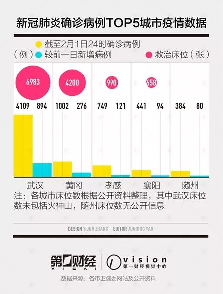

肺炎日记|2月2日：力不从心红会“让路”，双黄连惹质疑
原文链接 备份链接 【财新网】（记者 黄蕙昭 综合）疫情局势仍然严峻。截至2日16时，中国累计确诊病例14489例，死亡304例，疑似病例19544例。湖北地区继续保持高增速：目前，湖北省确诊病例9074例，其中黄冈市累计确诊1002 …
03.02.2020

本文字数：2583，阅读时长大约4.5分钟
导读：随着疫情扩散，确诊和疑似病患增多，病人能否求得一张床位备受关注，目前重灾区通过新建、改建、扩建形式增加床位，确保“应住尽住、应收尽收”。
作者 | 第一财经 陈益刊
新型冠状病毒感染的肺炎病例还在增加，各地救治能力如何？医用物资、床位、医护人员等能否跟上？
国家卫健委数据显示，截至2月1日24时，收到31个省（自治区、直辖市）和新疆生产建设兵团累计报告确诊新型冠状病毒感染的肺炎（下称“新冠肺炎”）病例14380例。
全国看，一天新增确诊病例2590例，其中湖北省新增1921例。
第一财经记者梳理各地数据发现，截至2月1日24时，在所有城市中，武汉（4109例）、黄冈（1002例）、孝感（749例）、襄阳（441例）、随州（384例）确诊病例位居全国前五，均在湖北省。
另外，湖北的宜昌、荆州、荆门确诊病例都超过300例，鄂州、黄石、十堰、咸宁和浙江温州确诊病例都超过200例。
2月2日，根据武汉市防控指挥部的要求，新冠肺炎确诊患者集中收治，疑似患者集中隔离，发热患者、密切接触者集中隔离观察。按照这个要求，疫情严重地区，有这种收治能力吗？
老百姓最关注的是，新冠肺炎集中暴发地方“能否住上院”。第一财经记者整理了新冠肺炎确诊病例数TOP5城市的医院收治能力。目前，湖北各地都在统筹调配医疗资源，尽可能多地腾空床位，加快新建改造医院及病房改造进度。


武汉已使用床位近7000，新医院将启用
作为新冠肺炎暴发地和最大灾区，武汉市新冠肺炎定点医院病房情况最受外界关注。
截至2月1日24时，武汉确诊新冠肺炎4109例。其中，1月27日，武汉大幅新增892例确诊，此后三天维持每日300多例的增长，1月31日增长576例，2月1日再次大规模新增894例。
根据武汉市卫健委数据，截至2月1日23:00，武汉三批23家新冠肺炎定点医院共开放床位6754个，目前已经使用6808个，还有175个空床位。其中，部分医院存在已用床位大于开放床位情况，这是因为部分医院按“应收尽收”要求，为收治更多疑似患者，尽最大努力安排加床，导致开放床位不完全等于已用床位加上空床位。而且空床位受收治能力影响也会动态变化。
第一财经记者了解到，武汉新冠肺炎床位还会继续增加。
为解决患者住院问题，武汉市紧急开工建设两家医院，即火神山医院和雷神山医院，两家医院加在一起计划是2000~2300张床位。
2月2日上午，武汉市市长周先旺和联勤保障部队副司令员白忠斌在火神山医院签署互换交接文件，标志着火神山医院正式交付人民军队医务工作者。医院主要救治确诊患者，编设床位1000张，开设重症监护病区、重症病区、普通病区，设置感染控制、检验、特诊、放射诊断等辅助科室。军队抽组1400名医护人员于2月3日起承担该院医疗救治任务。雷神山医院则将于2月5日正式交付。
此外，国家卫健委医政医管局副局长焦雅辉1月28日介绍，武汉市第四批定点医院征用开始，紧急征用华中科技大学同济医院新的院区，还包括武汉大学人民医院的东院区等14家医院，能够腾退出约6000张床位，所有这些床位加在一起共1万多张，可以收治现在的疑似病例和确诊病例，包括发热留观待排查的病例。
焦雅辉称，仅有床位是不够的，全国紧急抽调了将近6000名医务人员，在这些床位开放以后，都可以投入到患者医疗救治工作中去。
除了武汉本地的医疗资源，据湖北省新冠肺炎防控指挥部统计，截至1月28日24时，已有北京、上海、湖南、四川等26个省区市以及3支部队医院组织了共计52支医疗队6097人增援湖北。
黄冈部分市县床位紧张
紧邻武汉的黄冈疫情也十分严峻，而且未来很可能还会大幅增加。
2月1日，黄冈大幅新增276例新冠肺炎病例，截至2月1日24时，黄冈累计有新冠肺炎1002例，突破千例，在湖北省内仅次于武汉，其中死亡15例。黄冈市市长邱丽新表示，2月1日和2日两天，黄冈现存的1000多例疑似病例很快就会检测完毕，这其中可能有很大比例是确诊病例。
截至1月31日24时，黄冈市定点医院住院治疗695例，累计追踪密切接触者6306人，尚在接受医学观察5695人。
根据官方数据，黄冈全市新冠肺炎定点医院为29家，救治床位达到4200张。其中，为了解决黄冈市区救治能力不足问题，1月24日，黄冈决定用三天时间紧急将大别山医疗中心改建为有1000张床位的集中救治医院，目前该医院已经启用接收病人。
在医护人员方面，黄冈建立医护人员梯队，组织涉及呼吸、心内、感染和重症四个专业2901名医生、4836名护士投入救治工作。分两批对全市1万余人次医务人员进行疾病诊断、重症治疗、个人防护、院感防控等知识培训。
另外，湖北省委、省政府向黄冈市派出指导组，湖南、山东派出4支医疗队、共540人支援黄冈，帮助研究救治方案，积极救治感染患者。
邱丽新1月31日表示，目前黄冈医疗救治能力仍然不足。尽管收治能力逐步提高，但部分县市床位紧张，乡村医护力量不足，定点医疗机构分类分区不到位，存在交叉感染风险。
对此，黄冈将加大收治医院的建设和征用力度，确保“应住尽住、应收尽收”。合理配置定点医疗机构，实现分级分类分区管理。
孝感、襄阳均建“小汤山”医院
孝感疫情也比较严峻，截至2月1日24时，孝感确诊人数达到749例，居全国第三，此外累计追踪密切接触者5428人，尚在接受医学观察5066人。
根据孝感市政府数据，目前全市公布31家新冠肺炎发热门诊，确定了9家定点医疗救治机构，设立隔离治疗区9个(孝感城区3个，各县市各1个)，设立医学观察点10个。
另外，孝感市指挥部已征用一家医疗机构作为备用医院，根据疫情进展和医疗需要，适时启用预备医院。
截至1月31日，孝感市及下辖的应城市、云梦县、大悟县，通过征用已有医院，设立4家“小汤山”模式医院，拥有床位990个；安陆市传染病医院正在争分夺秒建设过程中，预计2月5日投入使用，拥有床位500个；孝南区西河镇、大悟县三里城镇因地制宜，建成微型“小汤山”病区。
襄阳市疫情防控也不容乐观。襄阳市卫健委数据显示，截至2月1日24时，确诊441例，累计疑似病例547例，上述人员均在定点医疗机构接受隔离治疗；累计追踪密切接触者3446人，当日解除医学观察88人，尚在接受医学观察3092人。
襄阳全市设置的发热门诊的医疗机构和定点救治医疗机构已分别增至73家和14家。此外，为了缓解医疗机构对新冠肺炎患者的救治压力，襄阳建设收治疫情患者的独立院区——襄阳市中心医院东津院区，2月1日初步可提供500个床位（单间）。
随州市卫健委数据显示，截至2月1日24时，随州确诊384例，全市现有疑似病例342例。已在全市设立了5家定点救治医疗机构和12个发热门诊医疗机构。
2月1日，随州市新冠肺炎疫情防控工作推进会议强调，随州市加强医疗基础设施建设，加快后备医院储备，按照有备无患的要求，抓好医院改建，对疑似病例进行强制性隔离、收治，重危症患者必须满足“三区两通道”要求。
（实习生张曼麟对本文有贡献）
【推荐阅读】
UP主实拍：“空城”武汉的物价、交通 、生活状态


原文链接 备份链接 【财新网】（记者 黄蕙昭 综合）疫情局势仍然严峻。截至2日16时，中国累计确诊病例14489例，死亡304例，疑似病例19544例。湖北地区继续保持高增速：目前，湖北省确诊病例9074例，其中黄冈市累计确诊1002 …
原文链接 备份链接 有多少疑似？ 326份CT检查报告单，除了60份不发热的其他病例，剩下的266份CT报告，136例显示“肺部感染，呈多发磨玻璃样高密度影”。1月22日，湖北省新华医院放射科医生李云华手颤抖着数完，沉默了许久。这些前一 …
原文链接 备份链接 2月1日，西藏自治区第三人民医院医生土旦朗杰观看病人胸片。目前，西藏唯一一例确诊的新型冠状病毒感染的肺炎患者在此住院治疗。觉果/摄 新华社CNML图片 作者 杨海 编辑 从玉华 李亮是武汉某三甲医院的病房主任，从1月 …
原文链接 备份链接 现在武汉那些专门的传染病医院，床位紧张，还有不少人拿着被子铺盖在医院输液，等待入院。我去复查时也看到有类似“一床难求”的情况。我还算是不幸中的万幸吧，自己吃药加上在家隔离就恢复了。 口述 | 余 毅（化名） 整理 | …
原文链接 备份链接 文/杜圆圆 编辑/单一 根据预测，新冠肺炎或将在一周后，迎来新的爆发期。从去年12月初被发现，到目前为止，疫情已经持续了两个月的时间。 从始至终，医护人员一直是最前线的逆行者。武汉这座刚崛起的新一线城市，成了全中国最惨 …